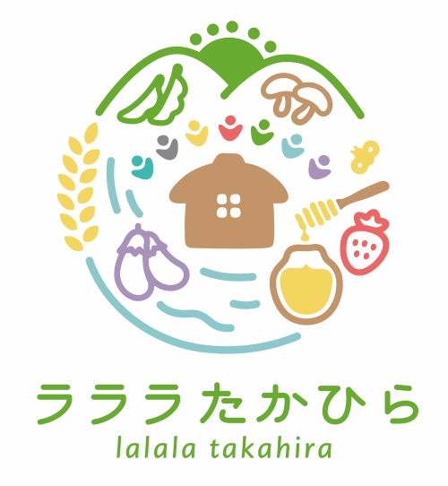

<footer class="site-footer" id="site-footer">
    <div class="site-container">
        <div class="footer-directory">
            <div class="footer-brand">
                <a class="footer-brand__identity" href="index.html" aria-label="ラララたかひら ホーム">
                    
                    <span><strong>ラララたかひら</strong><small>兵庫県三田市・高平地区</small></span>
                </a>
                <p>学生と地域で、里山の楽しみをつくる。</p>
            </div>
            <nav class="footer-nav" aria-label="フッターナビゲーション">
                <a href="index.html">ホーム</a>
                <a href="about.html">団体紹介</a>
                <a href="events.html">イベント情報</a>
                <a href="reports.html">活動報告</a>
                <a href="media.html">メディア掲載</a>
            </nav>
            <div class="footer-contact">
                <p class="footer-eyebrow">CONTACT</p>
                <a href="mailto:lalala.takahira@gmail.com"><span>お問い合わせ</span><span aria-hidden="true">↗</span></a>
                <p class="footer-contact__email">lalala.takahira@gmail.com</p>
                <a class="footer-social" href="https://www.instagram.com/lalala_takahira/" target="_blank" rel="noopener noreferrer"><span>Instagram</span><span aria-hidden="true">↗</span></a>
            </div>
        </div>
        <div class="footer-bottom"><small>&copy; 2024 ラララたかひら</small><button class="footer-back-top" type="button"><span>ページの先頭へ</span><span aria-hidden="true">↑</span></button></div>
    </div>
</footer>
